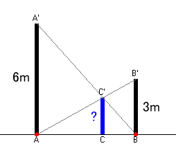

| Two poles AA'and BB' are standining vertically to the ground. AA'and BB' are 6m long and 3m long respectively. We stretched two wires AB' and BA', and set up the pole CC'. Find the height of the point C'. |  |
|
Drag the red points A and B. What do you observe about the length of CC'? |